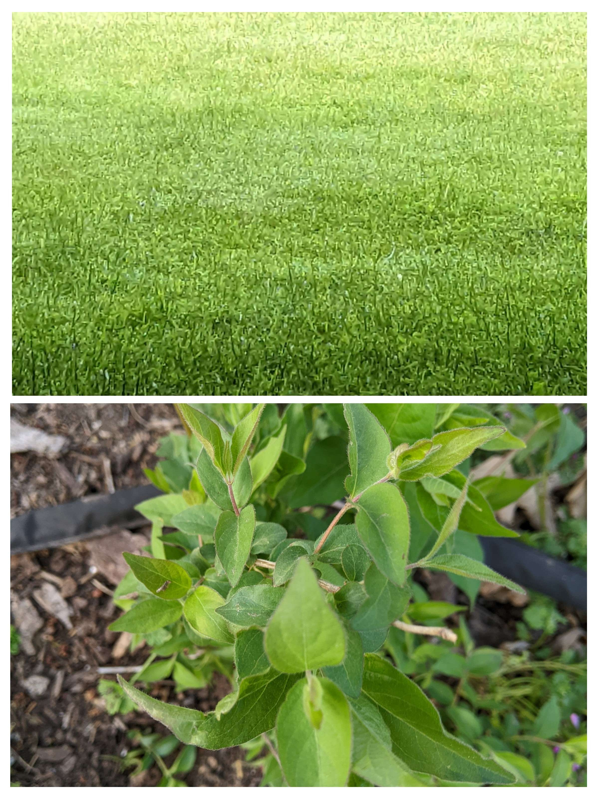
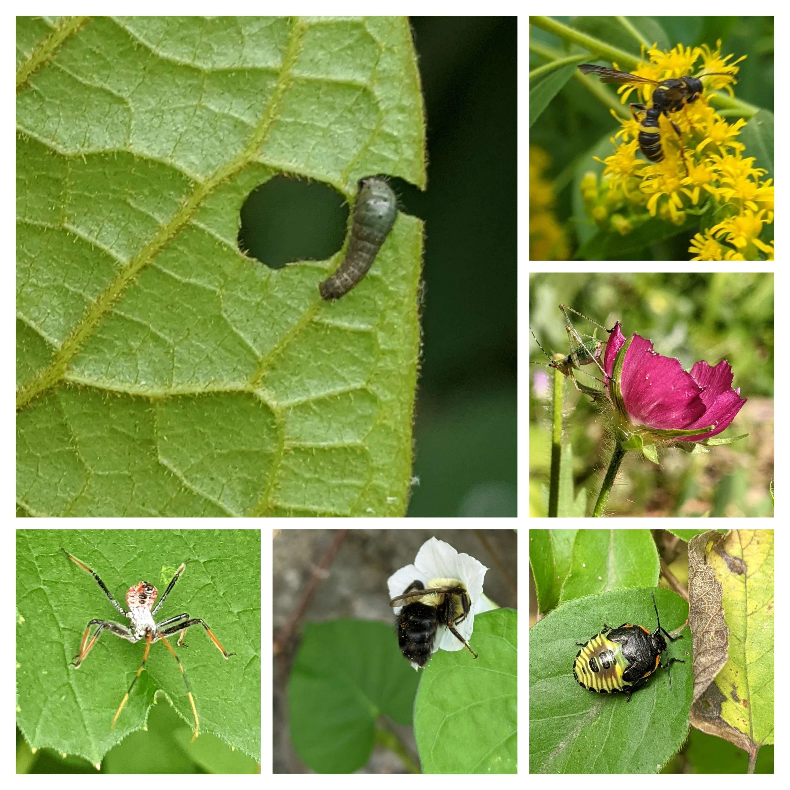

Ecological Deserts

As people go on their neighborhood walks, most people would
think that just because they see the color green that they
live in a world full of ecology and abundance. However, most
of what we see planted in most modern gardens and lawns are
not usuable by the insects. This is because insects co-evolved
with the plants around them, and since plants have toxins within
them to defend themselves, only certain insects can thrive eating
and breeding on certain plants. This means that while you may see
a few insects here and there, they barely have any plants in
which they can eat and procreate with. Unless you grow plants
native to a region, and hosts to the wildlife that lives in that
region, what you are basically left with is a green desert in
which very little can thrive. The crash of the insect population
then leads to the crash of the populations of birds, reptiles,
small mammals, and effects the entire food chain. The food chain
BEGINS with the native plants of your region.
The Process of Conversion

Because of this issue, which is causing population collapse in the natural
world on a massive scale, some homeowners are choosing to create native
gardens in their yards. Inspired by the book "Nature's Best Hope: A New
Approach to Conservation That Starts in Your Yard", by Douglas W. Tallamy,
I have decided to add my own home to the list of what he has coined as
"Home-grown National Parks". Now anyone who has access to land or even
a pot of soil can grow beautiful native plants that will allow the smallest
of the Earth's creatures to feed and multiply, thus feeding into the rest
of the local ecology's needs. Pictured above is my own yard, in which I am
converting lawn to young native plants. While it may look like a "stick garden"
now, in a few years the ground should be properly covered by an abudance of
plants.
"If you build it they will come"

These are some creatures which have since moved into my yard since the
addition of native plants to my yard. The very tiny caterpillar is of
the Zebra Swallowtail butterfly, feeding on the leaves of the Paw Paw
tree in my yard. This is a prime example of an insect which cannot live
and procreate without it's host plant. As caterpillars are also the main
source of food for birds who are raising chicks, planting the paw paw
benefits not only the Zebra Swallowtail butterflies, but also ensures
that the baby birds will have plenty to eat in the spring when those
caterpillars become fat enough for them. Everything is connected in
a delicate balance, and giving nature a little help in this
tumultuous environment. Every little bit counts.